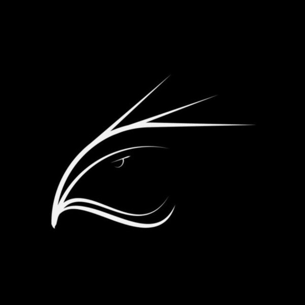

Контент страницы
Текст этой страницы на исходном сайте Google Sites представлен в виде изображений и не был автоматически извлечён. Добавьте данные статистики, чтобы завершить перенос.

ANCION ArmyДополнительно
Цифры и показатели проекта ANCION Army.
Текст этой страницы на исходном сайте Google Sites представлен в виде изображений и не был автоматически извлечён. Добавьте данные статистики, чтобы завершить перенос.